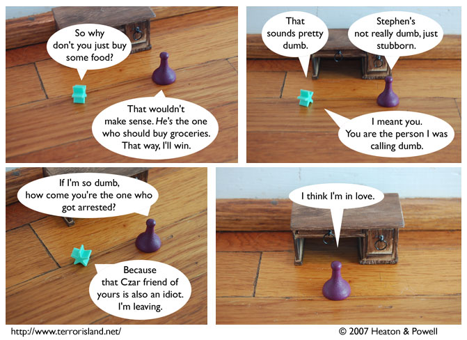

Strip #216
— Monday, October 29, 2007
Sue wasn’t actually arrested. She was summoned to answer a civil complaint.
Notes, Thoughts, &c.
Ben’s Notes
Here’s a slightly better view of the desk from the last strip. It’s still covered up more than I would like.
Note to Lewis: we should do a storyline where everybody becomes permanently mute due to some sort of demon curse or something. Then I wouldn’t have to put all those speech bubbles over everything.
Lewis’s Notes
How many of you have wondered what it would sound like if Lewis played “Alouette” on the flute? The good news is, now you can find out.
Also, I want to encourage fans with Facebook accounts to join the Terror Island Facebook group.